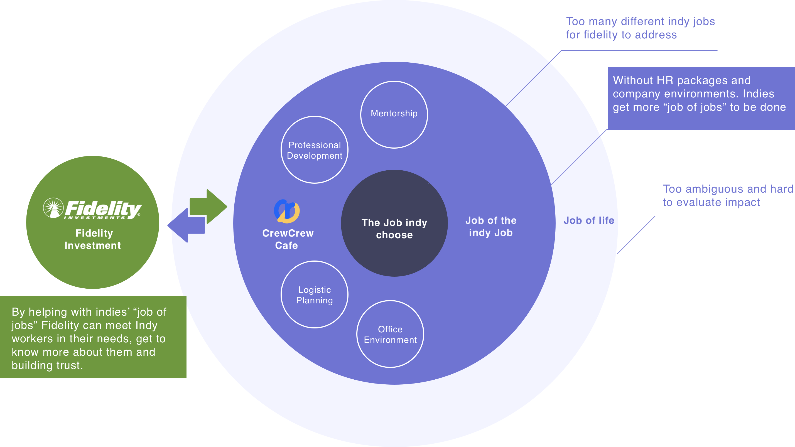
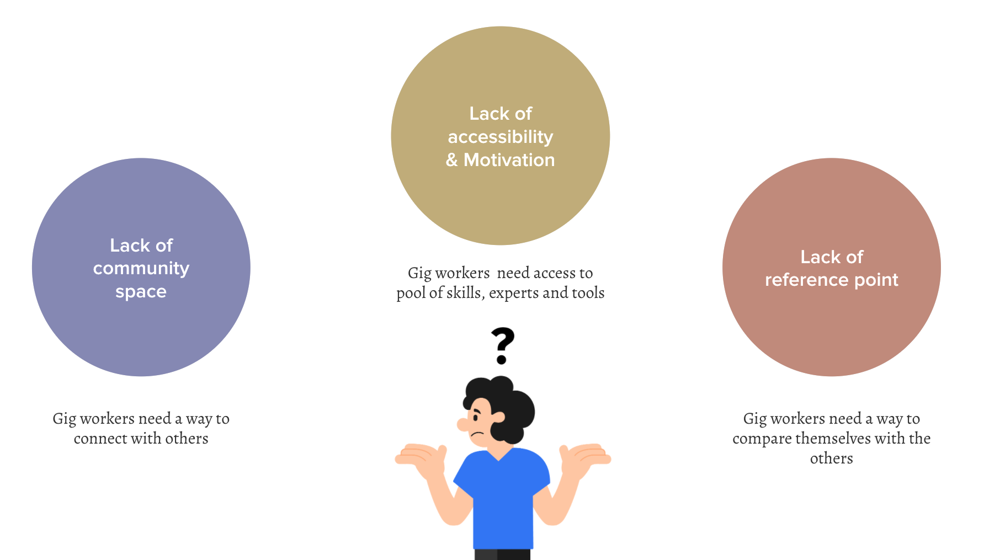
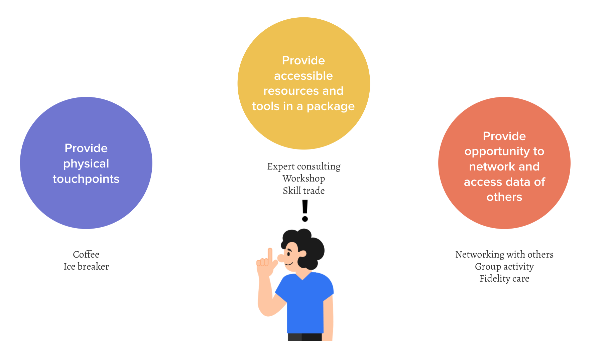
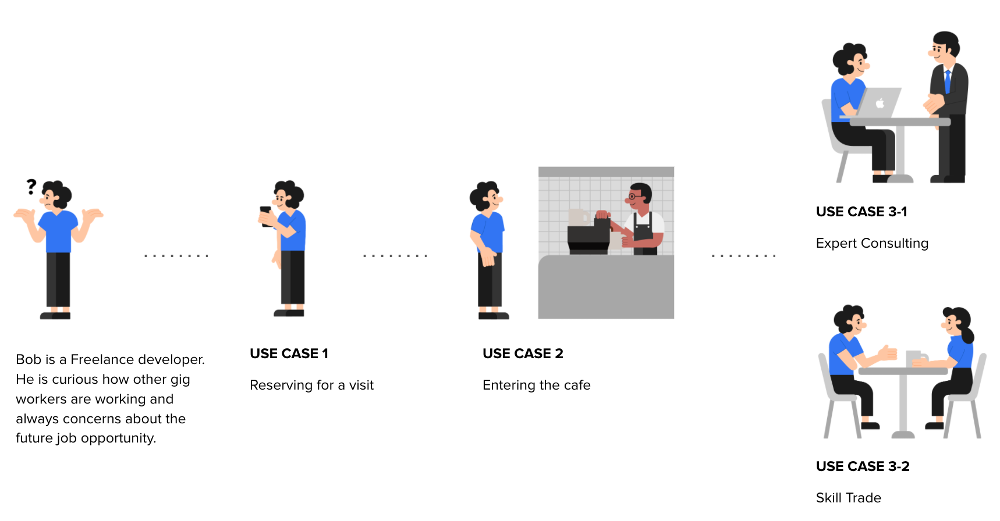

An indy (or indie) worker is an independent worker. Compared with other employees, they usually handle many things on their own. Among these 5 types we are focusing on steady indies, who chose to work independently and wanted a balanced life.
"Working in the gig economy is a decision made in the effort to have more freedom, yet it is often met with many complex and time-consuming tasks" -- The steady indy says

We started from defining What “is” the current problem by conducting user tests and secondary researches, then distilled the findings into the model of what “is” by making a journey map, then we suggested the model of what “could be” from the insights by making user flows and use cases, then we ran usability test, manifested our use cases by as What “could be” the potential solution for the future.

As an indy worker, they go through so many difficulties in their journey being alone and making decisions all on their own everytime. The key challenges we identified was 1.Lack of community space, they need a way to connect with others. 2.Lack of accessibility, they need better access to pool of skills, experts and tools. 3.Lack of reference point, they need a way to compare themselves with the others to feel safe, understanding that they are on the right track.

So, we made three design principles, First, let’s provide 1.physical touchpoints, where they can hang out and have coffee with the others, a place full of conversation and valuable information. 2.we want to provide accessible resources and tools in a package. Quick and easy access to the experts, workshops and skill pools. 3.Provide opportunity to network and access data of others. Understand where others are at and find out their future path.

The reservation system provides gig workers a sense of belonging. Gig worker’s one of the biggest issue is that they are normally working alone and it’s hard to get feedbacks. CRCR cafe will act as sort of a one-day company for them.
Before Reservation: App checks gig workers’ mental health for every visit in order to provide expert consulting inside the cafe
Reservation: The user opens the app to register for a visit. He can see the overall layout of the place to understand what he wants to do. Then, they can fill out the schedule, personal information and check out the estimated members for that day.
Bob decides to have a chat with other indy workers that are in a similar situation. He steps into the cafe and jumps on the kiosk. He orders coffee and then chooses the plan. The kiosk remembers the plan he chose at the registration phase. He then takes the ice breaker that could initiate a conversation.
Self-service with kiosk: Bob orders coffee and then chooses the plan. The kiosk remembers the plan he chose at the registration phase so he can easily make the reservation through the kiosk.
Choosing seat with mobile: Bob checks out the availability of the tables to locate which table he wants to join. After deciding where to sit, the colored light pops up on the table he registered.
Fidelity Care is another key function on the mobile, it is where users can get Fidelity’s help with finance, career and mental health all in one place. User can monitor the overall status, and directly schedule an appointment with Fidelity specialist for help.
Introducing Fidelity Care: The user clicks the Fidelity care tab. In this tab, Fidelity takes care of the user in three big categories to provide help for his finance, career and wellness.
Finding an expert: The user can view the holistic scores of his overall management. If he wants to better manage some graphs, he can choose to talk with recommended experts or even the other gig workers inside the cafe.
After expert consulting: After the expert consulting, specific plan tab gets created based on the consulting results. If the user follows the checklists, his cup gets refilled by the barista.
Bob uses the mobile APP to explore the community. There are more function unlocked upon his arriving. One of that is skill trade, where he can either trade his skill in different ways, or find some skillful person.
During this project, we were able to approach the problem with the perspective of the industry, connected with actual researchers and designers in the field, while we also tried to propose an outside view that challenges industry orthodoxies. We started from crazy ideas and validated them by many rounds of testing and iterations. There is no end of design, but I am proud of what we achieved here. Here are the three main lessons I learned from this project: